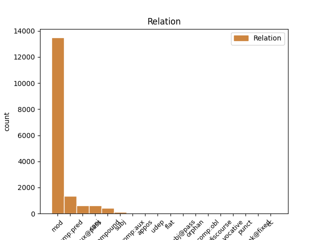
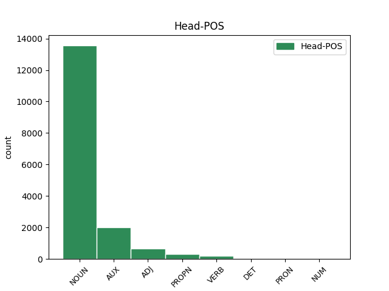
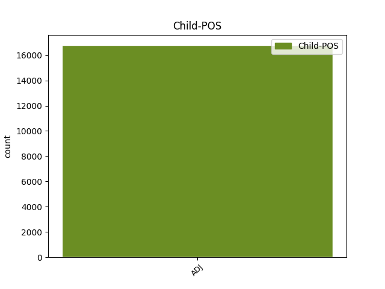

Distribution of features within this leaf



Agreement Rules sorted by frequency.
- When the dependent token is the modifer(mod) of the head token, and the dependent token is ADJ.
1 Nakon _ _ _ _ 0 _ _ _
2 odluke _ _ _ _ 0 _ _ _
3 Europskog europski ADJ Agpmsgy Case=Gen|Definite=Def|Degree=Pos|Gender=Masc|Number=Sing 4 mod _ _
4 suda sud NOUN Ncmsg Case=Gen|Gender=Masc|Number=Sing 0 _ _ _
5 u _ _ _ _ 0 _ _ _
6 Strasbourgu _ _ _ _ 0 _ _ _
1 ( _ _ _ _ 0 _ _ _
2 3 _ _ _ _ 0 _ _ _
3 ) _ _ _ _ 0 _ _ _
4 Za _ _ _ _ 0 _ _ _
5 dio _ _ _ _ 0 _ _ _
6 građevinskog _ _ _ _ 0 _ _ _
7 područja _ _ _ _ 0 _ _ _
8 naselja _ _ _ _ 0 _ _ _
9 Novi _ _ _ _ 0 _ _ _
10 Vinodolski _ _ _ _ 0 _ _ _
11 NA1 _ _ _ _ 0 _ _ _
12 1 _ _ _ _ 0 _ _ _
13 - _ _ _ _ 0 _ _ _
14 registriranu _ _ _ _ 0 _ _ _
15 povijesnu _ _ _ _ 0 _ _ _
16 graditeljsku _ _ _ _ 0 _ _ _
17 cjelinu _ _ _ _ 0 _ _ _
18 , _ _ _ _ 0 _ _ _
19 moguća moguć ADJ Agpnpny Case=Nom|Definite=Def|Degree=Pos|Gender=Neut|Number=Plur 20 comp:pred _ _
20 su biti AUX Var3p Mood=Ind|Number=Plur|Person=3|Tense=Pres|VerbForm=Fin 0 _ _ _
21 odstupanja _ _ _ _ 0 _ _ _
22 od _ _ _ _ 0 _ _ _
23 zadanih _ _ _ _ 0 _ _ _
24 graničnih _ _ _ _ 0 _ _ _
25 vrijednosti _ _ _ _ 0 _ _ _
26 navedenih _ _ _ _ 0 _ _ _
27 u _ _ _ _ 0 _ _ _
28 člancima _ _ _ _ 0 _ _ _
29 27. _ _ _ _ 0 _ _ _
30 i _ _ _ _ 0 _ _ _
31 28. _ _ _ _ 0 _ _ _
32 Ovih _ _ _ _ 0 _ _ _
33 Odredbi _ _ _ _ 0 _ _ _
34 ali _ _ _ _ 0 _ _ _
35 samo _ _ _ _ 0 _ _ _
36 u _ _ _ _ 0 _ _ _
37 smislu _ _ _ _ 0 _ _ _
38 uvjeta _ _ _ _ 0 _ _ _
39 određenih _ _ _ _ 0 _ _ _
40 od _ _ _ _ 0 _ _ _
41 nadležnog _ _ _ _ 0 _ _ _
42 Konzervatorskog _ _ _ _ 0 _ _ _
43 odjela _ _ _ _ 0 _ _ _
44 ( _ _ _ _ 0 _ _ _
45 označeno _ _ _ _ 0 _ _ _
46 kao _ _ _ _ 0 _ _ _
47 gradsko _ _ _ _ 0 _ _ _
48 naselje _ _ _ _ 0 _ _ _
49 - _ _ _ _ 0 _ _ _
50 zone _ _ _ _ 0 _ _ _
51 14 _ _ _ _ 0 _ _ _
52 A _ _ _ _ 0 _ _ _
53 i _ _ _ _ 0 _ _ _
54 14 _ _ _ _ 0 _ _ _
55 B _ _ _ _ 0 _ _ _
56 na _ _ _ _ 0 _ _ _
57 kartografskom _ _ _ _ 0 _ _ _
58 prikazu _ _ _ _ 0 _ _ _
59 br. _ _ _ _ 0 _ _ _
60 4.1. _ _ _ _ 0 _ _ _
61 » _ _ _ _ 0 _ _ _
62 Građevinska _ _ _ _ 0 _ _ _
63 područja _ _ _ _ 0 _ _ _
64 « _ _ _ _ 0 _ _ _
65 u _ _ _ _ 0 _ _ _
66 mjerilu _ _ _ _ 0 _ _ _
67 1:5000 _ _ _ _ 0 _ _ _
68 ) _ _ _ _ 0 _ _ _
69 . _ _ _ _ 0 _ _ _
1 Ibrahim _ _ _ _ 0 _ _ _
2 Babić _ _ _ _ 0 _ _ _
3 i _ _ _ _ 0 _ _ _
4 njegova _ _ _ _ 0 _ _ _
5 obitelj _ _ _ _ 0 _ _ _
6 ipak _ _ _ _ 0 _ _ _
7 nisu biti AUX Var3p Mood=Ind|Number=Plur|Person=3|Polarity=Neg|Tense=Pres|VerbForm=Fin 0 _ _ _
8 deložirani deložirati ADJ Appmpny Case=Nom|Definite=Def|Degree=Pos|Gender=Masc|Number=Plur|VerbForm=Part|Voice=Pass 7 comp:aux@pass _ _
9 iz _ _ _ _ 0 _ _ _
10 stana _ _ _ _ 0 _ _ _
11 koji _ _ _ _ 0 _ _ _
12 im _ _ _ _ 0 _ _ _
13 je _ _ _ _ 0 _ _ _
14 na _ _ _ _ 0 _ _ _
15 privremeno _ _ _ _ 0 _ _ _
16 korištenje _ _ _ _ 0 _ _ _
17 dao _ _ _ _ 0 _ _ _
18 Grad _ _ _ _ 0 _ _ _
19 Zadar _ _ _ _ 0 _ _ _
20 još _ _ _ _ 0 _ _ _
21 1988. _ _ _ _ 0 _ _ _
22 godine _ _ _ _ 0 _ _ _
23 . _ _ _ _ 0 _ _ _
1 Slikovito _ _ _ _ 0 _ _ _
2 rečeno _ _ _ _ 0 _ _ _
3 , _ _ _ _ 0 _ _ _
4 uobičajen uobičajen ADJ Agpmsnn Case=Nom|Definite=Ind|Degree=Pos|Gender=Masc|Number=Sing 0 _ _ _
5 , _ _ _ _ 0 _ _ _
6 i _ _ _ _ 0 _ _ _
7 modno _ _ _ _ 0 _ _ _
8 nametnut nametnut ADJ Agpmsnn Case=Nom|Definite=Ind|Degree=Pos|Gender=Masc|Number=Sing 4 conj _ _
9 način _ _ _ _ 0 _ _ _
10 odijevanja _ _ _ _ 0 _ _ _
11 suvremene _ _ _ _ 0 _ _ _
12 žene _ _ _ _ 0 _ _ _
13 karakteriziraju _ _ _ _ 0 _ _ _
14 duboki _ _ _ _ 0 _ _ _
15 izrazi _ _ _ _ 0 _ _ _
16 gdje _ _ _ _ 0 _ _ _
17 god _ _ _ _ 0 _ _ _
18 je _ _ _ _ 0 _ _ _
19 i _ _ _ _ 0 _ _ _
20 koliko _ _ _ _ 0 _ _ _
21 god _ _ _ _ 0 _ _ _
22 je _ _ _ _ 0 _ _ _
23 moguće _ _ _ _ 0 _ _ _
24 . _ _ _ _ 0 _ _ _
1 ( _ _ _ _ 0 _ _ _
2 3 _ _ _ _ 0 _ _ _
3 ) _ _ _ _ 0 _ _ _
4 Za _ _ _ _ 0 _ _ _
5 dio _ _ _ _ 0 _ _ _
6 građevinskog _ _ _ _ 0 _ _ _
7 područja _ _ _ _ 0 _ _ _
8 naselja _ _ _ _ 0 _ _ _
9 Novi nov ADJ Agpmsny Case=Nom|Definite=Def|Degree=Pos|Gender=Masc|Number=Sing 10 compound _ _
10 Vinodolski Vinodolski PROPN Npmsn Case=Nom|Gender=Masc|Number=Sing 0 _ _ _
11 NA1 _ _ _ _ 0 _ _ _
12 1 _ _ _ _ 0 _ _ _
13 - _ _ _ _ 0 _ _ _
14 registriranu _ _ _ _ 0 _ _ _
15 povijesnu _ _ _ _ 0 _ _ _
16 graditeljsku _ _ _ _ 0 _ _ _
17 cjelinu _ _ _ _ 0 _ _ _
18 , _ _ _ _ 0 _ _ _
19 moguća _ _ _ _ 0 _ _ _
20 su _ _ _ _ 0 _ _ _
21 odstupanja _ _ _ _ 0 _ _ _
22 od _ _ _ _ 0 _ _ _
23 zadanih _ _ _ _ 0 _ _ _
24 graničnih _ _ _ _ 0 _ _ _
25 vrijednosti _ _ _ _ 0 _ _ _
26 navedenih _ _ _ _ 0 _ _ _
27 u _ _ _ _ 0 _ _ _
28 člancima _ _ _ _ 0 _ _ _
29 27. _ _ _ _ 0 _ _ _
30 i _ _ _ _ 0 _ _ _
31 28. _ _ _ _ 0 _ _ _
32 Ovih _ _ _ _ 0 _ _ _
33 Odredbi _ _ _ _ 0 _ _ _
34 ali _ _ _ _ 0 _ _ _
35 samo _ _ _ _ 0 _ _ _
36 u _ _ _ _ 0 _ _ _
37 smislu _ _ _ _ 0 _ _ _
38 uvjeta _ _ _ _ 0 _ _ _
39 određenih _ _ _ _ 0 _ _ _
40 od _ _ _ _ 0 _ _ _
41 nadležnog _ _ _ _ 0 _ _ _
42 Konzervatorskog _ _ _ _ 0 _ _ _
43 odjela _ _ _ _ 0 _ _ _
44 ( _ _ _ _ 0 _ _ _
45 označeno _ _ _ _ 0 _ _ _
46 kao _ _ _ _ 0 _ _ _
47 gradsko _ _ _ _ 0 _ _ _
48 naselje _ _ _ _ 0 _ _ _
49 - _ _ _ _ 0 _ _ _
50 zone _ _ _ _ 0 _ _ _
51 14 _ _ _ _ 0 _ _ _
52 A _ _ _ _ 0 _ _ _
53 i _ _ _ _ 0 _ _ _
54 14 _ _ _ _ 0 _ _ _
55 B _ _ _ _ 0 _ _ _
56 na _ _ _ _ 0 _ _ _
57 kartografskom _ _ _ _ 0 _ _ _
58 prikazu _ _ _ _ 0 _ _ _
59 br. _ _ _ _ 0 _ _ _
60 4.1. _ _ _ _ 0 _ _ _
61 » _ _ _ _ 0 _ _ _
62 Građevinska _ _ _ _ 0 _ _ _
63 područja _ _ _ _ 0 _ _ _
64 « _ _ _ _ 0 _ _ _
65 u _ _ _ _ 0 _ _ _
66 mjerilu _ _ _ _ 0 _ _ _
67 1:5000 _ _ _ _ 0 _ _ _
68 ) _ _ _ _ 0 _ _ _
69 . _ _ _ _ 0 _ _ _
1 I _ _ _ _ 0 _ _ _
2 što _ _ _ _ 0 _ _ _
3 je _ _ _ _ 0 _ _ _
4 to _ _ _ _ 0 _ _ _
5 što _ _ _ _ 0 _ _ _
6 je _ _ _ _ 0 _ _ _
7 stišano _ _ _ _ 0 _ _ _
8 , _ _ _ _ 0 _ _ _
9 odnosno _ _ _ _ 0 _ _ _
10 , _ _ _ _ 0 _ _ _
11 što _ _ _ _ 0 _ _ _
12 je _ _ _ _ 0 _ _ _
13 to _ _ _ _ 0 _ _ _
14 australsko _ _ _ _ 0 _ _ _
15 u _ _ _ _ 0 _ _ _
16 australskim _ _ _ _ 0 _ _ _
17 filmovima _ _ _ _ 0 _ _ _
18 , _ _ _ _ 0 _ _ _
19 pitamo _ _ _ _ 0 _ _ _
20 se _ _ _ _ 0 _ _ _
21 u _ _ _ _ 0 _ _ _
22 vremenu _ _ _ _ 0 _ _ _
23 u _ _ _ _ 0 _ _ _
24 kojemu _ _ _ _ 0 _ _ _
25 mnogi mnogi ADJ Agpmpny Case=Nom|Definite=Def|Degree=Pos|Gender=Masc|Number=Plur 26 subj _ _
26 žele željeti VERB Vmr3p Mood=Ind|Number=Plur|Person=3|Tense=Pres|VerbForm=Fin 0 _ _ _
27 da _ _ _ _ 0 _ _ _
28 svi _ _ _ _ 0 _ _ _
29 filmovi _ _ _ _ 0 _ _ _
30 budu _ _ _ _ 0 _ _ _
31 nalik _ _ _ _ 0 _ _ _
32 američkima _ _ _ _ 0 _ _ _
33 . _ _ _ _ 0 _ _ _
1 " _ _ _ _ 0 _ _ _
2 Njemačke _ _ _ _ 0 _ _ _
3 kompanije _ _ _ _ 0 _ _ _
4 osjećaju _ _ _ _ 0 _ _ _
5 kako _ _ _ _ 0 _ _ _
6 strana _ _ _ _ 0 _ _ _
7 potražnja _ _ _ _ 0 _ _ _
8 više _ _ _ _ 0 _ _ _
9 nije biti AUX Var3s Mood=Ind|Number=Sing|Person=3|Polarity=Neg|Tense=Pres|VerbForm=Fin 0 _ _ _
10 onako _ _ _ _ 0 _ _ _
11 dinamična dinamičan ADJ Agpfsny Case=Nom|Definite=Def|Degree=Pos|Gender=Fem|Number=Sing 9 comp:aux _ _
12 kakva _ _ _ _ 0 _ _ _
13 je _ _ _ _ 0 _ _ _
14 nekoć _ _ _ _ 0 _ _ _
15 bila _ _ _ _ 0 _ _ _
16 i _ _ _ _ 0 _ _ _
17 kako _ _ _ _ 0 _ _ _
18 globalna _ _ _ _ 0 _ _ _
19 ekonomija _ _ _ _ 0 _ _ _
20 ulazi _ _ _ _ 0 _ _ _
21 u _ _ _ _ 0 _ _ _
22 slabu _ _ _ _ 0 _ _ _
23 fazu _ _ _ _ 0 _ _ _
24 " _ _ _ _ 0 _ _ _
25 , _ _ _ _ 0 _ _ _
26 rekao _ _ _ _ 0 _ _ _
27 je _ _ _ _ 0 _ _ _
28 ekonomist _ _ _ _ 0 _ _ _
29 Dekabanka _ _ _ _ 0 _ _ _
30 , _ _ _ _ 0 _ _ _
31 Andreas _ _ _ _ 0 _ _ _
32 Scheuerle _ _ _ _ 0 _ _ _
33 , _ _ _ _ 0 _ _ _
34 za _ _ _ _ 0 _ _ _
35 list _ _ _ _ 0 _ _ _
36 Die _ _ _ _ 0 _ _ _
37 Welt _ _ _ _ 0 _ _ _
38 . _ _ _ _ 0 _ _ _
1 Druga _ _ _ _ 0 _ _ _
2 dva _ _ _ _ 0 _ _ _
3 nastavka nastavak NOUN Ncmsg Case=Gen|Gender=Masc|Number=Sing 0 _ _ _
4 feljtona _ _ _ _ 0 _ _ _
5 - _ _ _ _ 0 _ _ _
6 " _ _ _ _ 0 _ _ _
7 Nespremna nespreman ADJ Agpfsny Case=Nom|Definite=Def|Degree=Pos|Gender=Fem|Number=Sing 3 appos _ _
8 za _ _ _ _ 0 _ _ _
9 životnu _ _ _ _ 0 _ _ _
10 ulogu _ _ _ _ 0 _ _ _
11 " _ _ _ _ 0 _ _ _
12 i _ _ _ _ 0 _ _ _
13 " _ _ _ _ 0 _ _ _
14 Priča _ _ _ _ 0 _ _ _
15 o _ _ _ _ 0 _ _ _
16 dva _ _ _ _ 0 _ _ _
17 grada _ _ _ _ 0 _ _ _
18 " _ _ _ _ 0 _ _ _
19 , _ _ _ _ 0 _ _ _
20 spekuliraju _ _ _ _ 0 _ _ _
21 izdaleka _ _ _ _ 0 _ _ _
22 o _ _ _ _ 0 _ _ _
23 nekim _ _ _ _ 0 _ _ _
24 njenim _ _ _ _ 0 _ _ _
25 intimnim _ _ _ _ 0 _ _ _
26 vezama _ _ _ _ 0 _ _ _
27 , _ _ _ _ 0 _ _ _
28 pa _ _ _ _ 0 _ _ _
29 Ekspertni _ _ _ _ 0 _ _ _
30 tim _ _ _ _ 0 _ _ _
31 postavlja _ _ _ _ 0 _ _ _
32 pitanje _ _ _ _ 0 _ _ _
33 " _ _ _ _ 0 _ _ _
34 zašto _ _ _ _ 0 _ _ _
35 su _ _ _ _ 0 _ _ _
36 samoubilačka _ _ _ _ 0 _ _ _
37 raspoloženja _ _ _ _ 0 _ _ _
38 dolazila _ _ _ _ 0 _ _ _
39 neposredno _ _ _ _ 0 _ _ _
40 nakon _ _ _ _ 0 _ _ _
41 najvećih _ _ _ _ 0 _ _ _
42 priznanja _ _ _ _ 0 _ _ _
43 ili _ _ _ _ 0 _ _ _
44 ostvarenja _ _ _ _ 0 _ _ _
45 ljubavnih _ _ _ _ 0 _ _ _
46 veza _ _ _ _ 0 _ _ _
47 kojima _ _ _ _ 0 _ _ _
48 je _ _ _ _ 0 _ _ _
49 toliko _ _ _ _ 0 _ _ _
50 težila _ _ _ _ 0 _ _ _
51 ? _ _ _ _ 0 _ _ _
52 " _ _ _ _ 0 _ _ _
1 Roditelji _ _ _ _ 0 _ _ _
2 koji _ _ _ _ 0 _ _ _
3 su _ _ _ _ 0 _ _ _
4 kod _ _ _ _ 0 _ _ _
5 djeteta _ _ _ _ 0 _ _ _
6 i _ _ _ _ 0 _ _ _
7 sami sam ADJ Agpmpny Case=Nom|Definite=Def|Degree=Pos|Gender=Masc|Number=Plur 8 udep _ _
8 primijetili primijetiti VERB Vmp-pm Gender=Masc|Number=Plur|Tense=Past|VerbForm=Part|Voice=Act 0 _ _ _
9 sklonost _ _ _ _ 0 _ _ _
10 agresivnijem _ _ _ _ 0 _ _ _
11 rješavanju _ _ _ _ 0 _ _ _
12 svađa _ _ _ _ 0 _ _ _
13 , _ _ _ _ 0 _ _ _
14 poteškoće _ _ _ _ 0 _ _ _
15 s _ _ _ _ 0 _ _ _
16 kontroliranjem _ _ _ _ 0 _ _ _
17 ljutnje _ _ _ _ 0 _ _ _
18 i _ _ _ _ 0 _ _ _
19 prihvaćanjem _ _ _ _ 0 _ _ _
20 postavljenih _ _ _ _ 0 _ _ _
21 granica _ _ _ _ 0 _ _ _
22 , _ _ _ _ 0 _ _ _
23 trebaju _ _ _ _ 0 _ _ _
24 biti _ _ _ _ 0 _ _ _
25 manje _ _ _ _ 0 _ _ _
26 iznenađeni _ _ _ _ 0 _ _ _
27 takvim _ _ _ _ 0 _ _ _
28 vijestima _ _ _ _ 0 _ _ _
29 . _ _ _ _ 0 _ _ _
1 Dok _ _ _ _ 0 _ _ _
2 je _ _ _ _ 0 _ _ _
3 prethodno _ _ _ _ 0 _ _ _
4 bilo _ _ _ _ 0 _ _ _
5 govora _ _ _ _ 0 _ _ _
6 kako _ _ _ _ 0 _ _ _
7 će _ _ _ _ 0 _ _ _
8 Marija _ _ _ _ 0 _ _ _
9 roditi _ _ _ _ 0 _ _ _
10 Sina _ _ _ _ 0 _ _ _
11 ( _ _ _ _ 0 _ _ _
12 r. _ _ _ _ 0 _ _ _
13 31 _ _ _ _ 0 _ _ _
14 ) _ _ _ _ 0 _ _ _
15 , _ _ _ _ 0 _ _ _
16 koji _ _ _ _ 0 _ _ _
17 će _ _ _ _ 0 _ _ _
18 biti _ _ _ _ 0 _ _ _
19 velik _ _ _ _ 0 _ _ _
20 i _ _ _ _ 0 _ _ _
21 zvati _ _ _ _ 0 _ _ _
22 se _ _ _ _ 0 _ _ _
23 Sin _ _ _ _ 0 _ _ _
24 Previšnjega _ _ _ _ 0 _ _ _
25 ( _ _ _ _ 0 _ _ _
26 r. _ _ _ _ 0 _ _ _
27 32 _ _ _ _ 0 _ _ _
28 ) _ _ _ _ 0 _ _ _
29 , _ _ _ _ 0 _ _ _
30 ovdje _ _ _ _ 0 _ _ _
31 je _ _ _ _ 0 _ _ _
32 Isus _ _ _ _ 0 _ _ _
33 prvi _ _ _ _ 0 _ _ _
34 put _ _ _ _ 0 _ _ _
35 nazvan _ _ _ _ 0 _ _ _
36 Sinom _ _ _ _ 0 _ _ _
37 Božjim _ _ _ _ 0 _ _ _
38 , _ _ _ _ 0 _ _ _
39 jer _ _ _ _ 0 _ _ _
40 njegovo _ _ _ _ 0 _ _ _
41 začeće _ _ _ _ 0 _ _ _
42 je _ _ _ _ 0 _ _ _
43 djelo _ _ _ _ 0 _ _ _
44 Duha Duh NOUN Ncmsg Case=Gen|Gender=Masc|Number=Sing 0 _ _ _
45 Svetoga Sveti ADJ Agpmsgy Case=Gen|Definite=Def|Degree=Pos|Gender=Masc|Number=Sing 44 flat _ SpaceAfter=No
46 . _ _ _ _ 0 _ _ _
1 Svečano svečan ADJ Agpnsny Case=Nom|Definite=Def|Degree=Pos|Gender=Neut|Number=Sing 8 subj@pass _ _
2 otvorenje _ _ _ _ 0 _ _ _
3 11. _ _ _ _ 0 _ _ _
4 izdanja _ _ _ _ 0 _ _ _
5 ove _ _ _ _ 0 _ _ _
6 manifestacije _ _ _ _ 0 _ _ _
7 upriličeno _ _ _ _ 0 _ _ _
8 je biti AUX Var3s Mood=Ind|Number=Sing|Person=3|Tense=Pres|VerbForm=Fin 0 _ _ _
9 kao _ _ _ _ 0 _ _ _
10 i _ _ _ _ 0 _ _ _
11 svake _ _ _ _ 0 _ _ _
12 godine _ _ _ _ 0 _ _ _
13 u _ _ _ _ 0 _ _ _
14 mjestu _ _ _ _ 0 _ _ _
15 Coucy _ _ _ _ 0 _ _ _
16 le _ _ _ _ 0 _ _ _
17 Chateau _ _ _ _ 0 _ _ _
18 , _ _ _ _ 0 _ _ _
19 a _ _ _ _ 0 _ _ _
20 prisutnima _ _ _ _ 0 _ _ _
21 se _ _ _ _ 0 _ _ _
22 obratila _ _ _ _ 0 _ _ _
23 i _ _ _ _ 0 _ _ _
24 Lidija _ _ _ _ 0 _ _ _
25 Vizek _ _ _ _ 0 _ _ _
26 Mrzljak _ _ _ _ 0 _ _ _
27 , _ _ _ _ 0 _ _ _
28 savjetnica _ _ _ _ 0 _ _ _
29 u _ _ _ _ 0 _ _ _
30 veleposlanstvu _ _ _ _ 0 _ _ _
31 RH _ _ _ _ 0 _ _ _
32 u _ _ _ _ 0 _ _ _
33 Parizu _ _ _ _ 0 _ _ _
34 . _ _ _ _ 0 _ _ _
1 Posebno _ _ _ _ 0 _ _ _
2 je _ _ _ _ 0 _ _ _
3 to _ _ _ _ 0 _ _ _
4 teško _ _ _ _ 0 _ _ _
5 u _ _ _ _ 0 _ _ _
6 Bosni _ _ _ _ 0 _ _ _
7 i _ _ _ _ 0 _ _ _
8 Hercegovini _ _ _ _ 0 _ _ _
9 , _ _ _ _ 0 _ _ _
10 koja _ _ _ _ 0 _ _ _
11 ima _ _ _ _ 0 _ _ _
12 penetraciju _ _ _ _ 0 _ _ _
13 interneta _ _ _ _ 0 _ _ _
14 kao _ _ _ _ 0 _ _ _
15 Burkina _ _ _ _ 0 _ _ _
16 Faso _ _ _ _ 0 _ _ _
17 , _ _ _ _ 0 _ _ _
18 slikovito _ _ _ _ 0 _ _ _
19 je _ _ _ _ 0 _ _ _
20 to _ _ _ _ 0 _ _ _
21 opisao _ _ _ _ 0 _ _ _
22 Zaimović _ _ _ _ 0 _ _ _
23 , _ _ _ _ 0 _ _ _
24 za _ _ _ _ 0 _ _ _
25 kojega _ _ _ _ 0 _ _ _
26 će _ _ _ _ 0 _ _ _
27 ulazak _ _ _ _ 0 _ _ _
28 BiH _ _ _ _ 0 _ _ _
29 u _ _ _ _ 0 _ _ _
30 EU _ _ _ _ 0 _ _ _
31 u _ _ _ _ 0 _ _ _
32 nekoj _ _ _ _ 0 _ _ _
33 dalekoj _ _ _ _ 0 _ _ _
34 budućnosti _ _ _ _ 0 _ _ _
35 biti _ _ _ _ 0 _ _ _
36 veliki _ _ _ _ 0 _ _ _
37 korak _ _ _ _ 0 _ _ _
38 za _ _ _ _ 0 _ _ _
39 EU _ _ _ _ 0 _ _ _
40 , _ _ _ _ 0 _ _ _
41 a _ _ _ _ 0 _ _ _
42 mali mali ADJ Agpmsny Case=Nom|Definite=Def|Degree=Pos|Gender=Masc|Number=Sing 44 orphan _ orig_deprel=amod
43 za _ _ _ _ 0 _ _ _
44 BiH BiH PROPN Npfsa Case=Acc|Gender=Fem|Number=Sing 0 _ _ _
45 , _ _ _ _ 0 _ _ _
46 jer _ _ _ _ 0 _ _ _
47 će _ _ _ _ 0 _ _ _
48 dotad _ _ _ _ 0 _ _ _
49 biti _ _ _ _ 0 _ _ _
50 jedina _ _ _ _ 0 _ _ _
51 članica _ _ _ _ 0 _ _ _
52 . _ _ _ _ 0 _ _ _
1 A _ _ _ _ 0 _ _ _
2 drugo drugi ADJ Mlonsn Case=Nom|Degree=Pos|Gender=Neut|Number=Sing 5 discourse _ SpaceAfter=No
3 , _ _ _ _ 0 _ _ _
4 apsolutno _ _ _ _ 0 _ _ _
5 nema nemati VERB Vmr3s Mood=Ind|Number=Sing|Person=3|Tense=Pres|VerbForm=Fin 0 _ _ _
6 šanse _ _ _ _ 0 _ _ _
7 da _ _ _ _ 0 _ _ _
8 bi _ _ _ _ 0 _ _ _
9 sve _ _ _ _ 0 _ _ _
10 što _ _ _ _ 0 _ _ _
11 smo _ _ _ _ 0 _ _ _
12 nosili _ _ _ _ 0 _ _ _
13 stalo _ _ _ _ 0 _ _ _
14 i _ _ _ _ 0 _ _ _
15 u _ _ _ _ 0 _ _ _
16 najveći _ _ _ _ 0 _ _ _
17 karavan _ _ _ _ 0 _ _ _
18 . _ _ _ _ 0 _ _ _
1 Samo _ _ _ _ 0 _ _ _
2 ne _ _ _ _ 0 _ _ _
3 namećite nametati VERB Vmm2p Mood=Imp|Number=Plur|Person=2|VerbForm=Fin 0 _ _ _
4 svoja _ _ _ _ 0 _ _ _
5 pravila _ _ _ _ 0 _ _ _
6 drugima drugi ADJ Mlompd Case=Dat|Degree=Pos|Gender=Masc|Number=Plur 3 comp:obl _ SpaceAfter=No
7 . _ _ _ _ 0 _ _ _
1 Znanost _ _ _ _ 0 _ _ _
2 danas _ _ _ _ 0 _ _ _
3 poznaje _ _ _ _ 0 _ _ _
4 brojne _ _ _ _ 0 _ _ _
5 uzroke _ _ _ _ 0 _ _ _
6 ovoj _ _ _ _ 0 _ _ _
7 pojavi _ _ _ _ 0 _ _ _
8 : _ _ _ _ 0 _ _ _
9 od _ _ _ _ 0 _ _ _
10 nasljednih _ _ _ _ 0 _ _ _
11 faktora _ _ _ _ 0 _ _ _
12 i _ _ _ _ 0 _ _ _
13 hormonalnih _ _ _ _ 0 _ _ _
14 poremećaja _ _ _ _ 0 _ _ _
15 , _ _ _ _ 0 _ _ _
16 do _ _ _ _ 0 _ _ _
17 loših _ _ _ _ 0 _ _ _
18 cipela _ _ _ _ 0 _ _ _
19 i _ _ _ _ 0 _ _ _
20 uske uzak ADJ Agpfsgy Case=Gen|Definite=Def|Degree=Pos|Gender=Fem|Number=Sing 21 punct _ _
21 odjeće odjeća NOUN Ncfsg Case=Gen|Gender=Fem|Number=Sing 0 _ _ _
22 , _ _ _ _ 0 _ _ _
23 no _ _ _ _ 0 _ _ _
24 najčešće _ _ _ _ 0 _ _ _
25 se _ _ _ _ 0 _ _ _
26 smatra _ _ _ _ 0 _ _ _
27 kako _ _ _ _ 0 _ _ _
28 je _ _ _ _ 0 _ _ _
29 glavni _ _ _ _ 0 _ _ _
30 uzrok _ _ _ _ 0 _ _ _
31 slaba _ _ _ _ 0 _ _ _
32 cirkulacija _ _ _ _ 0 _ _ _
33 u _ _ _ _ 0 _ _ _
34 venama _ _ _ _ 0 _ _ _
35 , _ _ _ _ 0 _ _ _
36 od _ _ _ _ 0 _ _ _
37 čega _ _ _ _ 0 _ _ _
38 praktički _ _ _ _ 0 _ _ _
39 sve _ _ _ _ 0 _ _ _
40 i _ _ _ _ 0 _ _ _
41 počinje _ _ _ _ 0 _ _ _
42 . _ _ _ _ 0 _ _ _
1 Crvenkovski _ _ _ _ 0 _ _ _
2 : _ _ _ _ 0 _ _ _
3 Republika _ _ _ _ 0 _ _ _
4 Makedonija _ _ _ _ 0 _ _ _
5 ima _ _ _ _ 0 _ _ _
6 i _ _ _ _ 0 _ _ _
7 institucionalni institucionalan ADJ Agpmsayn Animacy=Inan|Case=Acc|Definite=Def|Degree=Pos|Gender=Masc|Number=Sing 8 cc _ _
8 kapacitet kapacitet NOUN Ncmsan Animacy=Inan|Case=Acc|Gender=Masc|Number=Sing 0 _ _ _
9 i _ _ _ _ 0 _ _ _
10 demokratski _ _ _ _ 0 _ _ _
11 potencijal _ _ _ _ 0 _ _ _
12 , _ _ _ _ 0 _ _ _
13 a _ _ _ _ 0 _ _ _
14 još _ _ _ _ 0 _ _ _
15 je _ _ _ _ 0 _ _ _
16 važnija _ _ _ _ 0 _ _ _
17 njena _ _ _ _ 0 _ _ _
18 čvrsta _ _ _ _ 0 _ _ _
19 odlučnost _ _ _ _ 0 _ _ _
20 da _ _ _ _ 0 _ _ _
21 dobije _ _ _ _ 0 _ _ _
22 datum _ _ _ _ 0 _ _ _
23 početka _ _ _ _ 0 _ _ _
24 pregovora _ _ _ _ 0 _ _ _
25 do _ _ _ _ 0 _ _ _
26 kraja _ _ _ _ 0 _ _ _
27 2008. _ _ _ _ 0 _ _ _
1 Bivša _ _ _ _ 0 _ _ _
2 ministrica _ _ _ _ 0 _ _ _
3 kulture _ _ _ _ 0 _ _ _
4 Melina _ _ _ _ 0 _ _ _
5 Mercouri _ _ _ _ 0 _ _ _
6 je _ _ _ _ 0 _ _ _
7 1989. _ _ _ _ 0 _ _ _
8 objavila _ _ _ _ 0 _ _ _
9 međunarodni _ _ _ _ 0 _ _ _
10 natječaj _ _ _ _ 0 _ _ _
11 za _ _ _ _ 0 _ _ _
12 dizajn _ _ _ _ 0 _ _ _
13 novog _ _ _ _ 0 _ _ _
14 objekta _ _ _ _ 0 _ _ _
15 , _ _ _ _ 0 _ _ _
16 no _ _ _ _ 0 _ _ _
17 projekt _ _ _ _ 0 _ _ _
18 koji koji DET Pi-msn Case=Nom|Gender=Masc|Number=Sing|PronType=Int,Rel 0 _ _ _
19 je _ _ _ _ 0 _ _ _
20 tada _ _ _ _ 0 _ _ _
21 odabran odabrati ADJ Appmsnn Case=Nom|Definite=Ind|Degree=Pos|Gender=Masc|Number=Sing|VerbForm=Part|Voice=Pass 18 unk@fixed _ _
22 nikad _ _ _ _ 0 _ _ _
23 nije _ _ _ _ 0 _ _ _
24 stigao _ _ _ _ 0 _ _ _
25 do _ _ _ _ 0 _ _ _
26 realizacije _ _ _ _ 0 _ _ _
27 . _ _ _ _ 0 _ _ _
1 Kao _ _ _ _ 0 _ _ _
2 što _ _ _ _ 0 _ _ _
3 pjesma _ _ _ _ 0 _ _ _
4 kaže _ _ _ _ 0 _ _ _
5 : _ _ _ _ 0 _ _ _
6 ' _ _ _ _ 0 _ _ _
7 Ličko _ _ _ _ 0 _ _ _
8 Lešće _ _ _ _ 0 _ _ _
9 , _ _ _ _ 0 _ _ _
10 Otočac _ _ _ _ 0 _ _ _
11 i _ _ _ _ 0 _ _ _
12 Brinje _ _ _ _ 0 _ _ _
13 mala mali ADJ Agpfsvy Case=Voc|Definite=Def|Degree=Pos|Gender=Fem|Number=Sing 16 vocative _ _
14 moja _ _ _ _ 0 _ _ _
15 ne _ _ _ _ 0 _ _ _
16 zaboravi zaboraviti VERB Vmm2s Mood=Imp|Number=Sing|Person=2|VerbForm=Fin 0 _ _ _
17 me _ _ _ _ 0 _ _ _
18 ' _ _ _ _ 0 _ _ _
19 , _ _ _ _ 0 _ _ _
20 siguran _ _ _ _ 0 _ _ _
21 sam _ _ _ _ 0 _ _ _
22 će _ _ _ _ 0 _ _ _
23 i _ _ _ _ 0 _ _ _
24 nama _ _ _ _ 0 _ _ _
25 ' _ _ _ _ 0 _ _ _
26 Lička _ _ _ _ 0 _ _ _
27 Kapa _ _ _ _ 0 _ _ _
28 ' _ _ _ _ 0 _ _ _
29 ostati _ _ _ _ 0 _ _ _
30 novi _ _ _ _ 0 _ _ _
31 , _ _ _ _ 0 _ _ _
32 nezaboravni _ _ _ _ 0 _ _ _
33 kamenčić _ _ _ _ 0 _ _ _
34 u _ _ _ _ 0 _ _ _
35 mozaiku _ _ _ _ 0 _ _ _
36 naših _ _ _ _ 0 _ _ _
37 biciklističkih _ _ _ _ 0 _ _ _
38 doživljaja _ _ _ _ 0 _ _ _
39 . _ _ _ _ 0 _ _ _
Disagree Examples:
1 Nema _ _ _ _ 0 _ _ _
2 sumnje _ _ _ _ 0 _ _ _
3 kako _ _ _ _ 0 _ _ _
4 će _ _ _ _ 0 _ _ _
5 naša _ _ _ _ 0 _ _ _
6 akcesija _ _ _ _ 0 _ _ _
7 u _ _ _ _ 0 _ _ _
8 Savez _ _ _ _ 0 _ _ _
9 , _ _ _ _ 0 _ _ _
10 kao _ _ _ _ 0 _ _ _
11 i _ _ _ _ 0 _ _ _
12 akcesija _ _ _ _ 0 _ _ _
13 druge _ _ _ _ 0 _ _ _
14 dvije _ _ _ _ 0 _ _ _
15 zemlje _ _ _ _ 0 _ _ _
16 potpisnice potpisnica NOUN Ncfpn Case=Nom|Gender=Fem|Number=Plur 0 _ _ _
17 Jadranske jadranski ADJ Agpfsgy Case=Gen|Definite=Def|Degree=Pos|Gender=Fem|Number=Sing 16 mod _ _
18 povelje _ _ _ _ 0 _ _ _
19 - _ _ _ _ 0 _ _ _
20 Albanije _ _ _ _ 0 _ _ _
21 i _ _ _ _ 0 _ _ _
22 Hrvatske _ _ _ _ 0 _ _ _
23 - _ _ _ _ 0 _ _ _
24 uvelike _ _ _ _ 0 _ _ _
25 pridonijeti _ _ _ _ 0 _ _ _
26 dodatnoj _ _ _ _ 0 _ _ _
27 stabilizaciji _ _ _ _ 0 _ _ _
28 regije _ _ _ _ 0 _ _ _
29 . _ _ _ _ 0 _ _ _
1 Paket _ _ _ _ 0 _ _ _
2 od _ _ _ _ 0 _ _ _
3 10 _ _ _ _ 0 _ _ _
4 točaka _ _ _ _ 0 _ _ _
5 predložila _ _ _ _ 0 _ _ _
6 je _ _ _ _ 0 _ _ _
7 vlada _ _ _ _ 0 _ _ _
8 predvođena _ _ _ _ 0 _ _ _
9 Strankom _ _ _ _ 0 _ _ _
10 pravde _ _ _ _ 0 _ _ _
11 i _ _ _ _ 0 _ _ _
12 razvitka _ _ _ _ 0 _ _ _
13 ( _ _ _ _ 0 _ _ _
14 AKP _ _ _ _ 0 _ _ _
15 ) _ _ _ _ 0 _ _ _
16 , _ _ _ _ 0 _ _ _
17 a _ _ _ _ 0 _ _ _
18 poduprle _ _ _ _ 0 _ _ _
19 su _ _ _ _ 0 _ _ _
20 ga _ _ _ _ 0 _ _ _
21 oporbene oporbeni ADJ Agpfpny Case=Nom|Definite=Def|Degree=Pos|Gender=Fem|Number=Plur 24 mod _ _
22 Republikanska _ _ _ _ 0 _ _ _
23 narodna _ _ _ _ 0 _ _ _
24 stranka stranka NOUN Ncfsn Case=Nom|Gender=Fem|Number=Sing 0 _ _ _
25 ( _ _ _ _ 0 _ _ _
26 CHP _ _ _ _ 0 _ _ _
27 ) _ _ _ _ 0 _ _ _
28 i _ _ _ _ 0 _ _ _
29 Stranka _ _ _ _ 0 _ _ _
30 pravoga _ _ _ _ 0 _ _ _
31 puta _ _ _ _ 0 _ _ _
32 ( _ _ _ _ 0 _ _ _
33 DYP _ _ _ _ 0 _ _ _
34 ) _ _ _ _ 0 _ _ _
35 . _ _ _ _ 0 _ _ _
1 " _ _ _ _ 0 _ _ _
2 Poduzet _ _ _ _ 0 _ _ _
3 ćemo _ _ _ _ 0 _ _ _
4 korake _ _ _ _ 0 _ _ _
5 koji _ _ _ _ 0 _ _ _
6 će _ _ _ _ 0 _ _ _
7 zasigurno _ _ _ _ 0 _ _ _
8 obuhvaćati _ _ _ _ 0 _ _ _
9 šire _ _ _ _ 0 _ _ _
10 konzultacije _ _ _ _ 0 _ _ _
11 sa _ _ _ _ 0 _ _ _
12 stručnjacima _ _ _ _ 0 _ _ _
13 iz _ _ _ _ 0 _ _ _
14 političkog politički ADJ Agpnsgy Case=Gen|Definite=Def|Degree=Pos|Gender=Neut|Number=Sing 17 mod _ _
15 i _ _ _ _ 0 _ _ _
16 drugih _ _ _ _ 0 _ _ _
17 područja područje NOUN Ncnpg Case=Gen|Gender=Neut|Number=Plur 0 _ _ _
18 javnog _ _ _ _ 0 _ _ _
19 djelovanja _ _ _ _ 0 _ _ _
20 " _ _ _ _ 0 _ _ _
21 , _ _ _ _ 0 _ _ _
22 rekao _ _ _ _ 0 _ _ _
23 je _ _ _ _ 0 _ _ _
24 . _ _ _ _ 0 _ _ _
1 " _ _ _ _ 0 _ _ _
2 Poduzet _ _ _ _ 0 _ _ _
3 ćemo _ _ _ _ 0 _ _ _
4 korake _ _ _ _ 0 _ _ _
5 koji _ _ _ _ 0 _ _ _
6 će _ _ _ _ 0 _ _ _
7 zasigurno _ _ _ _ 0 _ _ _
8 obuhvaćati _ _ _ _ 0 _ _ _
9 šire _ _ _ _ 0 _ _ _
10 konzultacije _ _ _ _ 0 _ _ _
11 sa _ _ _ _ 0 _ _ _
12 stručnjacima _ _ _ _ 0 _ _ _
13 iz _ _ _ _ 0 _ _ _
14 političkog politički ADJ Agpnsgy Case=Gen|Definite=Def|Degree=Pos|Gender=Neut|Number=Sing 0 _ _ _
15 i _ _ _ _ 0 _ _ _
16 drugih drugi ADJ Mlonpg Case=Gen|Degree=Pos|Gender=Neut|Number=Plur 14 conj _ _
17 područja _ _ _ _ 0 _ _ _
18 javnog _ _ _ _ 0 _ _ _
19 djelovanja _ _ _ _ 0 _ _ _
20 " _ _ _ _ 0 _ _ _
21 , _ _ _ _ 0 _ _ _
22 rekao _ _ _ _ 0 _ _ _
23 je _ _ _ _ 0 _ _ _
24 . _ _ _ _ 0 _ _ _
1 Iako _ _ _ _ 0 _ _ _
2 je _ _ _ _ 0 _ _ _
3 taj _ _ _ _ 0 _ _ _
4 trend _ _ _ _ 0 _ _ _
5 u _ _ _ _ 0 _ _ _
6 opadanju _ _ _ _ 0 _ _ _
7 , _ _ _ _ 0 _ _ _
8 još _ _ _ _ 0 _ _ _
9 je _ _ _ _ 0 _ _ _
10 dug _ _ _ _ 0 _ _ _
11 put _ _ _ _ 0 _ _ _
12 do _ _ _ _ 0 _ _ _
13 njegova _ _ _ _ 0 _ _ _
14 potpunog _ _ _ _ 0 _ _ _
15 nestanka _ _ _ _ 0 _ _ _
16 " _ _ _ _ 0 _ _ _
17 , _ _ _ _ 0 _ _ _
18 rekla _ _ _ _ 0 _ _ _
19 je _ _ _ _ 0 _ _ _
20 Anica _ _ _ _ 0 _ _ _
21 Tomić _ _ _ _ 0 _ _ _
22 Stojkovska _ _ _ _ 0 _ _ _
23 iz _ _ _ _ 0 _ _ _
24 koalicije koalicija NOUN Ncfsg Case=Gen|Gender=Fem|Number=Sing 0 _ _ _
25 Svi sav ADJ Agpmpny Case=Nom|Definite=Def|Degree=Pos|Gender=Masc|Number=Plur 24 appos _ _
26 za _ _ _ _ 0 _ _ _
27 poštena _ _ _ _ 0 _ _ _
28 suđenja _ _ _ _ 0 _ _ _
29 . _ _ _ _ 0 _ _ _